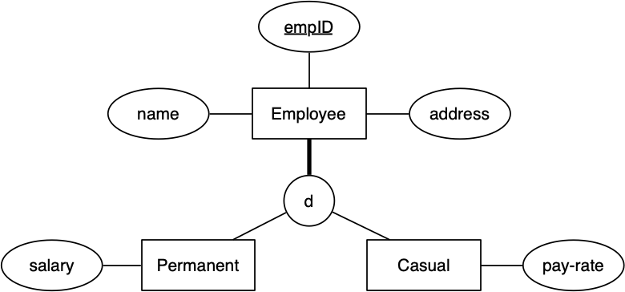

COMP3311 Week 2 Tuesday Lecture
COMP3311 23T1 ♢ Week 2 Tuesday Lecture ♢ [0/25]
In today's lecture ...
- More ER → SQL, and SQL DDL
- Building/restoring a database
Things to do ...
- Quiz before Friday midnight
- Set up your PostgreSQL server
(300 students have logged in to vxdb2 and have /localstorage)
- Help Session, Friday 4pm, Location: TBA
COMP3311 23T1 ♢ Week 2 Tuesday Lecture ♢ [1/25]
ER → Relational/SQL Mapping
- attributes → attributes
- entities → relations/tables
- 1:1 relationships → foreign key
- 1:n relationships → foreign key
- n:m relationships → link table
- multi-valued attributes → table
- compound attributes → attributes
COMP3311 23T1 ♢ Week 2 Tuesday Lecture ♢ [2/25]
Three different approaches to mapping subclasses to tables:
- ER style
- each entity becomes a separate table,
- containing attributes of subclass + FK to superclass table
- object-oriented
- each entity becomes a separate table,
- inheriting all attributes from all superclasses
- single table with nulls
- whole class hierarchy becomes one table,
- containing all attributes of all subclasses (null, if unused)
Which mapping is best depends on how data is to be used.
COMP3311 23T1 ♢ Week 2 Tuesday Lecture ♢ [3/25]
❖ Mapping Subclasses (cont) | |
Example of ER-style mapping:
COMP3311 23T1 ♢ Week 2 Tuesday Lecture ♢ [4/25]
❖ Mapping Subclasses (cont) | |
Example of object-oriented mapping:
COMP3311 23T1 ♢ Week 2 Tuesday Lecture ♢ [5/25]
❖ Mapping Subclasses (cont) | |
Example of single-table-with-nulls mapping:
COMP3311 23T1 ♢ Week 2 Tuesday Lecture ♢ [6/25]
General strategies:
- one table for each entity set
- attributes for each entity table
- identify key attribute(s) for each table
- suitable domains/constrints for each attribute
- relationships either as tables or foreign keys
COMP3311 23T1 ♢ Week 2 Tuesday Lecture ♢ [7/25]
❖ Exercise: ER-to-SQL (1) | |
Convert the following class hierarchy to SQL using ER mapping:

COMP3311 23T1 ♢ Week 2 Tuesday Lecture ♢ [8/25]
❖ Exercise: ER-to-SQL (2) | |
Convert this ER design to SQL:
COMP3311 23T1 ♢ Week 2 Tuesday Lecture ♢ [9/25]
❖ Exercise: ER-to-SQL (3) | |
Convert the Publishing ER model to SQL
- A TFN is stored as a 9-digit number
- An ABN is stored as an 11-digit number
- An ISBN (13-digit version) looks like 978-3-16-148410-0
COMP3311 23T1 ♢ Week 2 Tuesday Lecture ♢ [10/25]
Create a database in PostgreSQL via
$ createdb DatabaseName
Creates an empty database (no schema, no data)
Remove a database in PostgreSQL via
$ dropdb DatabaseName
Removes schema and all data permanently
COMP3311 23T1 ♢ Week 2 Tuesday Lecture ♢ [11/25]
The psql command is a shell that allows you to
- access databases (one at a time)
- ask SQL queries on a database
- find information (meta data) about a database
- add/delete/update tuples in tables
Usage:
$ psql DatabaseName
COMP3311 23T1 ♢ Week 2 Tuesday Lecture ♢ [12/25]
psql's normal behaviour
- print prompt, read command, execute command, display result
- command = an SQL statement or a
psql meta-command
$ psql mydb
...
mydb=# command1
result of command1
mydb=# command2
result of command2
mydb=# command3
result of command3
...
mydb=# \q
$
COMP3311 23T1 ♢ Week 2 Tuesday Lecture ♢ [13/25]
A useful way to use psql:
$ psql -l
Gives a list of all databases under your PostgreSQL server.
The "databases" postgres, template1, template2
- are special databases used internally by PostgreSQL
- do not
dropdb them
COMP3311 23T1 ♢ Week 2 Tuesday Lecture ♢ [14/25]
The psql command has several prompts
-
db=# ... waiting to start a command
-
db-# ... waiting for rest of command
-
db(# ... waiting for rest of expression (...)
-
db'# ... waiting to finish a string (expecting closing ')
Note that db will be (replaced by) the name of the current database
Note that # means you are super-user; normal users get >
SQL statements can span several lines, terminated by typing ;
psql meta-commands are single-line commands
COMP3311 23T1 ♢ Week 2 Tuesday Lecture ♢ [15/25]
psql has a range of meta-commands, beginning with \
-
help ... a quick list of useful meta-commands
-
\? ... a list of all meta-commands (very many of them)
-
\dt ... list of all tables in current schema
-
\d Table ... list of all attributes in Table
-
\df ... list of all user-defined functions in current schema
-
\q ... exit psql
COMP3311 23T1 ♢ Week 2 Tuesday Lecture ♢ [16/25]
❖ Exercise: Creating a database | |
On vxdb2, do the following:
COMP3311 23T1 ♢ Week 2 Tuesday Lecture ♢ [17/25]
Basic way of adding tuples to a database:
db=# insert into Table values (val1,val2,...);
Adds a tuple to table Table assuming
- values satisfy all constraints on tuples/table
Ways it can fail ...
- value for primary key field is already in the table
- tuple has
null values for fields defined as not null
- value for some field violates constraints on that field
- etc. etc. etc.
COMP3311 23T1 ♢ Week 2 Tuesday Lecture ♢ [18/25]
❖ Exercise: Inserting Tuples | |
Which insert statements are successful?
If successful, what tuple value is inserted?
create type Mood as enum ('sad','happy');
create table People (
name text not null,
feels Mood
);
insert into People values ('John','happy');
insert into People values ('Andrew','angry');
insert into People values ('Tina',null);
insert into People(name) values ('Anne');
insert into People(feels) values ('happy');
COMP3311 23T1 ♢ Week 2 Tuesday Lecture ♢ [19/25]
❖ Exercise: More Inserting Tuples | |
Which insert statements are successful?
If successful, what tuple value is inserted?
create domain PosInt as integer check (value > 0);
create table Points (
x PosInt default 1,
y posint
);
insert into Points values (3,4);
insert into Points values (3,null);
insert into Points values (-3,4);
insert into Points(y) values (5);
insert into Points values (default,5);
COMP3311 23T1 ♢ Week 2 Tuesday Lecture ♢ [20/25]
Entering tuples interactively one-by-one is not feasible
Alternative: put insert statements in a file and run
$ psql DatabaseName -f FileName
Attempts to execute each insert statement:
- if tuple valid, inserted into database
- if tuple not valid, prints error message, then continues
Note that
FileName can contain any SQL statements
Might consist only of create table statements to build a schema
COMP3311 23T1 ♢ Week 2 Tuesday Lecture ♢ [21/25]
A common way of building a database
$ createdb mydb
$ psql mydb -f schema.sql
$ psql mydb -f data.sql
where
-
schema.sql contains table and type definitions
-
data.sql contains statements to insert tuples
COMP3311 23T1 ♢ Week 2 Tuesday Lecture ♢ [22/25]
How I "debug" a database
$ dropdb mydb
$ createdb mydb
$ psql mydb -f schema.sql > .errs 2>&1
$ vi .errs
$ psql mydb -f data.sql > .errs 2>&1
$ vi .errs
Repeat until .errs contains no lines with ERROR
COMP3311 23T1 ♢ Week 2 Tuesday Lecture ♢ [23/25]
Alternative way of inserting tuples
copy TableName ( attribute names ) from stdin;
\.
Difference between copy and multiple inserts
- with
insert ...
- tuples with invalid values are not inserted
- all tuples with valid values are inserted
- with
copy ...
- if any tuples contain invlid values, nothing is inserted
COMP3311 23T1 ♢ Week 2 Tuesday Lecture ♢ [24/25]
❖ Exercise: Playing with Beer Database | |
Load up the database from schema.sql and data.sql
Fix any errors that appear
Once loaded correctly, find out ...
- what tables are in the database
- what fields/attributes are in the
Beers table
- what fields/attributes are in the
Breweries table
- how many beers there are
- how many breweries there are
- what beers have "Black Lung" in their name
COMP3311 23T1 ♢ Week 2 Tuesday Lecture ♢ [25/25]
Produced: 23 Feb 2023